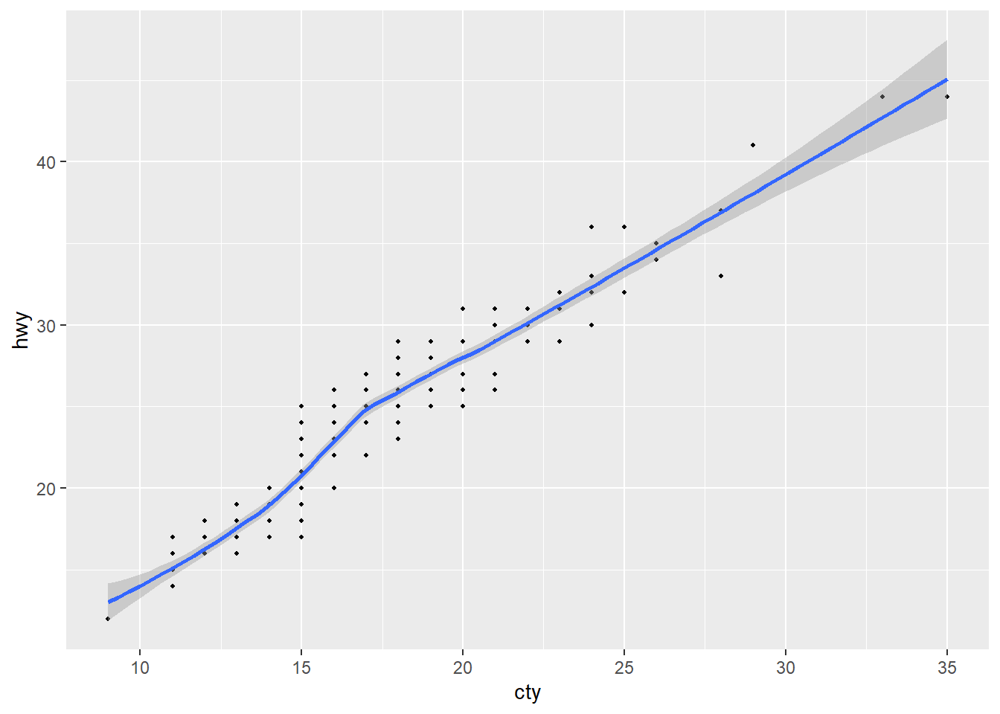
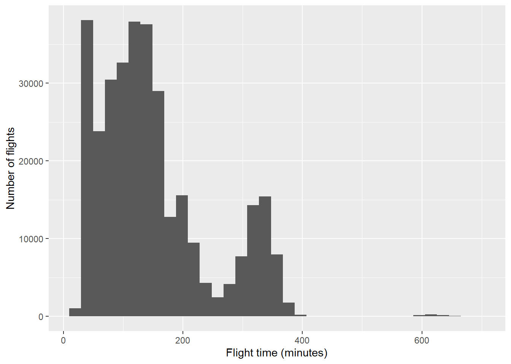
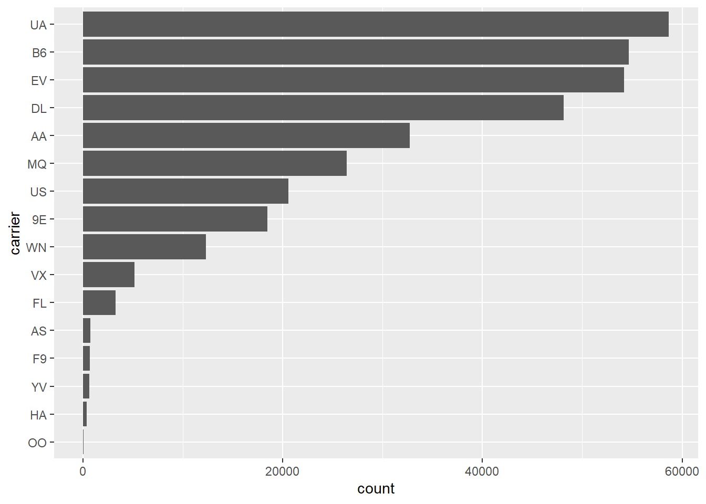
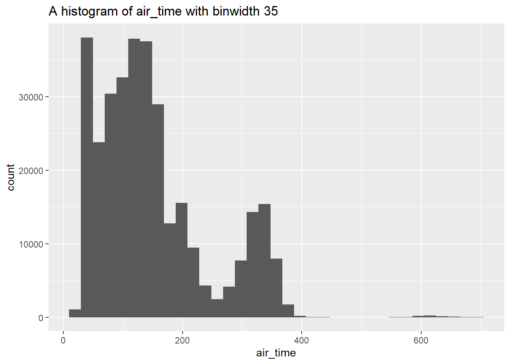

You can download this .qmd file from here. Just hit the Download Raw File button.
Introduction (from Ch 25 of R4DS)
One of the best ways to improve your reach as a data scientist is to write functions. Functions allow you to automate common tasks in a more powerful and general way than copy-and-pasting. Writing a function has four big advantages over using copy-and-paste:
You can give a function an evocative name that makes your code easier to understand.
As requirements change, you only need to update code in one place, instead of many.
You eliminate the chance of making incidental mistakes when you copy and paste (i.e. updating a variable name in one place, but not in another).
It makes it easier to reuse work from project-to-project, increasing your productivity over time.
A good rule of thumb is to consider writing a function whenever you’ve copied and pasted a block of code more than twice (i.e. you now have three copies of the same code). We’ll learn about three useful types of functions:
Vector functions take one or more vectors as input and return a vector as output.
Data frame functions take a data frame as input and return a data frame as output.
Plot functions that take a data frame as input and return a plot as output.
# Initial packages required (we'll be adding more)library(tidyverse)library(nycflights13)flights
Notice first what changes and what stays the same in each line. Then, if we look at the first line above, we see we have one value we’re using over and over: df$a. So our function will have one input. We’ll start with our code from that line, then replace the input (df$a) with x. We should give our function a name that explains what it does. The name should be a verb.
# I'm going to show you how to write the function in class! # I have it in the code already below, but don't look yet!# Let's try to write it together first!rescale01 <-function(x){ (x-min(x)) / (max(x) -min(x))}
A name. The name should clearly evoke what the function does; hence, it is often a verb (action). Here we’ll use rescale01 because this function rescales a vector to lie between 0 and 1. snake_case is good; CamelCase is just okay.
The arguments. The arguments are things that vary across calls and they are usually nouns - first the data, then other details. Our analysis above tells us that we have just one; we’ll call it x because this is the conventional name for a numeric vector, but you can use any word.
The body. The body is the code that’s repeated across all the calls. By default a function will return the last statement; use return() to specify a return value
Summary: Functions should be written for both humans and computers!
Once we have written a function we like, then we need to test it with different inputs!
We should continue testing unusual inputs. Think carefully about how you want this function to behave… the current behavior is to include the Inf (infinity) value when calculating the range. You get strange output everywhere, but it’s pretty clear that there is a problem right away when you use the function. In the example below (rescale1), you ignore the infinity value when calculating the range. The function returns Inf for one value, and sensible stuff for the rest. In many cases this may be useful, but it could also hide a problem until you get deeper into an analysis.
Before we try some practice problems, let’s consider various options for handling NAs in functions. We used the na.rm option within functions like min, max, and range in order to take care of missing values. But there are alternative approaches:
filter/remove the NA values before rescaling
create an if statement to check if there are NAs; return an error if NAs exist
create a removeNAs option in the function we are creating
Let’s take a look at each alternative approach in turn:
[Pause to Ponder:] Do you notice anything in the output above that gives you pause?
I notice the negative values are all red and the tibbles are different dimensions when using the different rescalers and filters.
Create an if statement to check if there are NAs; return an error if NAs exist
First, here’s an example involving weighted means:
# Create function to calculate weighted meanwt_mean <-function(x, w) {sum(x * w) /sum(w)}wt_mean(c(1, 6), c(1/3, 2/3))
[1] 4.333333
wt_mean(1:6, 1:3)
[1] 7.666667
[Pause to Ponder:] Why is the answer to the last call above 7.67? Aren’t we taking a weighted mean of 1-6, all of which are below 7?
The weighting is messed up and R “recycles” the values of w in this case.
# update function to handle cases where data and weights of unequal lengthwt_mean <-function(x, w) {if (length(x) !=length(w)) {stop("`x` and `w` must be the same length", call. =FALSE) } else {sum(w * x) /sum(w) } }wt_mean(1:6, 1:3)
Error: `x` and `w` must be the same length
# should produce an error now if weights and data different lengths# - nice example of if and else
[Pause to Ponder:] What does the call. option do? The call. option makes the error message shorter or longer depending on the = value. If TRUE, it is a longer message.
[Pause to Ponder:] Why can’t we just use if (is.na(x)) instead of is.na(sum(x))? Because x is a vector, we should use is.na(sum(x)) since if expects a TRUE FALSE value.
Create a removeNAs option in the function we are creating
OK, but all the other summary stats functions use na.rm as the input, so to be consistent, it’s probably better to do something slightly awkward like this:
wt_mean() is an example of a “summary function (single value output) instead of a”mutate function” (vector output) like rescale01(). Here’s another summary function to produce the mean absolute percentage error:
Error in `geom_point()`:
! Problem while computing aesthetics.
ℹ Error occurred in the 1st layer.
Caused by error:
! object 'cty' not found
The problem is tidy evaluation, which makes most common coding easier, but makes some less common things harder. Key terms to understand tidy evaluation:
env-variables = live in the environment (mpg)
data-variables = live in data frame or tibble (cty)
data masking = tidyverse use data-variables as if they are env-variables. That is, you don’t always need mpg$cty to access cty in tidyverse
The key idea behind data masking is that it blurs the line between the two different meanings of the word “variable”:
env-variables are “programming” variables that live in an environment. They are usually created with <-.
data-variables are “statistical” variables that live in a data frame. They usually come from data files (e.g. .csv, .xls), or are created manipulating existing variables.
The solution is to embrace {{ }} data-variables which are user inputs into functions. One way to remember what’s happening, as suggested by our book authors, is to think of {{ }} as looking down a tunnel — {{ var }} will make a dplyr function look inside of var rather than looking for a variable called var. Thus, embracing a variable tells dplyr to use the value stored inside the argument, not the argument as the literal variable name.
See Section 25.3 of R4DS for more details (and there are plenty!).
# This will work to make our plot!make_plot <-function(dataset, xvar, yvar, pt_size =0.75) {ggplot(data = dataset, mapping =aes(x = {{ xvar }}, y = {{ yvar }})) +geom_point(size = pt_size) +geom_smooth()}make_plot(dataset = mpg, xvar = cty, yvar = hwy)
`geom_smooth()` using method = 'loess' and formula = 'y ~ x'

I often wish it were easier to get my own custom summary statistics for numeric variables in EDA rather than using mosaic::favstats(). Using group_by() and summarise() from the tidyverse reads clearly but takes so many lines, but if I only had to write the code once…
summary6 <-function(data, var) { data |>summarize(mean =mean({{ var }}, na.rm =TRUE),median =median({{ var }}, na.rm =TRUE),sd =sd({{ var }}, na.rm =TRUE),IQR =IQR({{ var }}, na.rm =TRUE),n =n(),n_miss =sum(is.na({{ var }})),.groups ="drop"# to leave the data in an ungrouped state )}mpg |>summary6(hwy)
# A tibble: 1 × 6
mean median sd IQR n n_miss
<dbl> <dbl> <dbl> <dbl> <int> <int>
1 23.4 24 5.95 9 234 0
Even cooler, I can use my new function with group_by()!
mpg |>group_by(drv) |>summary6(hwy)
# A tibble: 3 × 7
drv mean median sd IQR n n_miss
<chr> <dbl> <dbl> <dbl> <dbl> <int> <int>
1 4 19.2 18 4.08 5 103 0
2 f 28.2 28 4.21 3 106 0
3 r 21 21 3.66 7 25 0
You can even pass conditions into a function using the embrace:
[Pause to Ponder:] Predict what the code below will do, and (only) then run it to check. Think about: why do we have sort = sort? why not embrace df? why didn’t we need n in the arguments?
The code creates a tibble that shows the count of observations in a dataframe and creates a variable that shows the proportion of observations. Using the sort = sort, leads the tibble to be organized by number of observations instead of by the default order. No embrace of The n is not needed because it is already in the argument with df.
Error in `group_by()`:
ℹ In argument: `c(year, month, day)`.
Caused by error:
! `c(year, month, day)` must be size 336776 or 1, not 1010328.
The problem is that group_by() uses data-masking rather than tidy-selection; it is selecting certain variables rather than evaluating values of those variables. These are the two most common subtypes of tidy evaluation:
Data-masking is used in functions like arrange(), filter(), mutate(), and summarize() that compute with variables. Data masking is an R feature that blends programming variables that live inside environments (env-variables) with statistical variables stored in data frames (data-variables).
Tidy-selection is used for functions like select(), relocate(), and rename() that select variables. Tidy selection provides a concise dialect of R for selecting variables based on their names or properties.
[Pause to Ponder:] Here’s another nice use of pick(). Predict what the function will do, then run the code to see if you are correct.
The new function will look at all of the differernt combinations of manufacturers and models, counting each, then creating a new column for the number of cylinders they each have.
Just use embrace to create a histogram-making function
histogram <-function(df, var, bins =NULL) { df |>ggplot(aes(x = {{ var }})) +geom_histogram(bins = bins)}flights |>histogram(air_time, 35)
Since histogram() returns a ggplot, you can add any layers you want
flights |>histogram(air_time, 35) +labs(x ="Flight time (minutes)", y ="Number of flights")

You can also combine data wrangling with plotting. Note that we need the “walrus operator” (:=) since the variable name on the left is being generated with user-supplied data.
# sort counts with highest values at top and counts on x-axissorted_bars <-function(df, var) { df |>mutate({{ var }} :=fct_rev(fct_infreq({{ var }}))) |>ggplot(aes(y = {{ var }})) +geom_bar()}flights |>sorted_bars(carrier)

Finally, it would be really helpful to label plots based on user inputs. This is a bit more complicated, but still do-able!
For this, we’ll need the rlang package. rlang is a low-level package that’s used by just about every other package in the tidyverse because it implements tidy evaluation (as well as many other useful tools).
Check out the following update of our histogram() function which uses the englue() function from the rlang package:
histogram <-function(df, var, bins) { label <- rlang::englue("A histogram of {{var}} with binwidth {bins}") df |>ggplot(aes(x = {{ var }})) +geom_histogram(bins = bins) +labs(title = label)}flights |>histogram(air_time, 35)

On Your Own
Rewrite this code snippet as a function: x / sum(x, na.rm = TRUE). This code creates weights which sum to 1, where NA values are ignored. Test it for at least two different vectors. (Make sure at least one has NAs!)
onmyown1 <-function(x) { x /sum(x, na.rm =TRUE)}onmyown1(temp0)
[1] 0.1481481 0.2222222 0.2962963 0.3333333 NA
Create a function to calculate the standard error of a variable, where SE = square root of the variance divided by the sample size. Hint: start with a vector like x <- 0:5 or x <- gss_cat$age and write code to find the SE of x, then turn it into a function to handle any vector x. Note: var is the function to find variance in R and sqrt does square root. length may also be handy. Test your function on two vectors that do not include NAs (i.e. do not worry about removing NAs at this point).
SE <-function(x, na.rm =TRUE){sqrt(var(x))/length(x)}SE(temp0)
[1] NA
Use your se function within summarize to get a table of the mean and s.e. of hwy and cty by class in the mpg dataset.
Use your se function within summarize to get a table of the mean and s.e. of arr_delay and dep_delay by carrier in the flights dataset. Why does the output look like this?
The output looks as follows due to using summarize. It creates a 1x2 tibble that shoes the mean arrival delay and the standard error. It only will have one observation because it is taking the cumulative average of the observations and therefore will also only have one standard error value.
Make your se function handle NAs with an na.rm option. Test your new function (you can call it se again) on a vector that doesn’t include NA and on the same vector with an added NA. Be sure to check that it gives the expected output with na.rm = TRUE and na.rm = FALSE. Make na.rm = FALSE the default value. Repeat #4. (Hint: be sure when you divide by sample size you don’t count any NAs)
Create both_na(), a function that takes two vectors of the same length and returns how many positions have an NA in both vectors. Hint: create two vectors like test_x <- c(1, 2, 3, NA, NA) and test_y <- c(NA, 1, 2, 3, NA) and write code that works for test_x and test_y, then turn it into a function that can handle any x and y. (In this case, the answer would be 1, since both vectors have NA in the 5th position.) Test it for at least one more combination of x and y.
Warning in is.na(x) & is.na(y): longer object length is not a multiple of
shorter object length
[1] 2
Run your code from (6) with the following two vectors: test_x <- c(1, 2, 3, NA, NA, NA) and test_y <- c(NA, 1, 2, 3, NA). Did you get the output you wanted or expected? Modify your function using if, else, and stop to print an error if x and y are not the same length. Then test again with test_x, test_y and the sets of vectors you used in (6).
Is it necessary to check is.na for both departure and arrival? Using summarize, find the number of flights missing departure delay, arrival delay, and both. (Use your new function!) Initially, I believe yes because it is possible that a plane is delayed at departure but makes the time up while in the air or leaves on time, but gets placed in a holding pattern and delayed.
f1: calcualates difference between two times by converting them to a standard time, new name: time_diff f2: takes the length and width in centimeters and converts to inches. New name: cm_to_in f3: takes responses that all fall under the same category and makes a single category. Name: non_answer
Explain what the following function does and demonstrate by running foo1(x) with a few appropriately chosen vectors x. (Hint: set x and run the “guts” of the function piece by piece.)
The function counts the number of times the vector decreases from the previous value
The foo1() function doesn’t perform well if a vector has missing values. Amend foo1() so that it produces a helpful error message and stops if there are any missing values in the input vector. Show that it works with appropriately chosen vectors x. Be sure you add error = TRUE to your R chunk, or else knitting will fail!
error = TRUE
Write a function called greet using if, else if, and else to print out “good morning” if it’s before 12 PM, “good afternoon” if it’s between 12 PM and 5 PM, and “good evening” if it’s after 5 PM. Your function should work if you input a time like: greet(time = "2018-05-03 17:38:01 CDT") or if you input the current time with greet(time = Sys.time()). [Hint: check out the hour function in the lubridate package]
Modify the summary6() function from earlier to add an argument that gives the user an option to remove missing values, if any exist. Show that your function works for (a) the hwy variable in mpg_tbl <- as_tibble(mpg), and (b) the age variable in gss_cat.
summary6_missing_rm <-function(data, var, secondvar, na.rm =TRUE) {if (na.rm) { data <- data |>filter(!is.na({{var}})) }else { data |>group_by({{secondvar}}) |>summarize(mean =mean({{ var }}, na.rm =TRUE),median =median({{ var }}, na.rm =TRUE),sd =sd({{ var }}, na.rm =TRUE),IQR =IQR({{ var }}, na.rm =TRUE),n =n(),n_miss =sum(is.na({{ var }})),.groups ="drop"# to leave the data in an ungrouped state) )} }mpg |>summary6_missing_rm(hwy)mpg_tbl <-as_tibble(mpg)gss_tbl <-as_tibble(gss_cat)summary6_missing_rm(mpg_tbl, hwy) summary6_missing_rm(gss_tbl, age) summary6_missing_rm(gss_tbl, age, na.rm =FALSE)
# A tibble: 1 × 6
mean median sd IQR n n_miss
<dbl> <int> <dbl> <dbl> <int> <int>
1 47.2 46 17.3 26 21483 76
Add an argument to (13) to produce summary statistics by group for a second variable (you should now have 4 possible inputs to your function). Show that your function works for (a) the hwy variable in mpg_tbl <- as_tibble(mpg) grouped by drv, and (b) the age variable in gss_cat grouped by partyid.
Create a function that has a vector as the input and returns the last value. (Note: Be sure to use a name that does not write over an existing function!)
Save your final table from (14) and write a function to draw a scatterplot of a measure of center (mean or median - user can choose) vs. a measure of spread (sd or IQR - user can choose), with points sized by sample size, to see if there is constant variance. Each point should be labeled with partyid, and the plot title should reflect the variables chosen by the user.
Hint: start with a ggplot with no user input, and then functionize:
library(ggrepel)scatterfun <-function(data, center ="mean", spread ="sd") {ggplot(data, aes(x = .data[[center]], y = .data[[spread]])) +geom_point(aes(size = n)) +geom_smooth(method ="lm") +geom_label_repel(aes(label = partyid)) +labs(title =paste(center, "vs", spread, "by party id"),x = center,y = spread)}scatterfun(party_age, center ="mean", spread ="sd")scatterfun(party_age, center ="median", spread ="IQR")